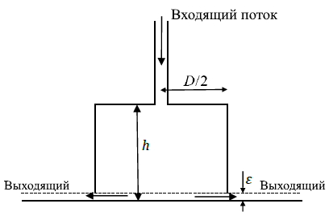

X21 (2021) — English translation
An air cushion is often used to move heavy loads. In this task we will explore the principle of its operation, which is schematically depicted in the figure below. Consider the following system configuration. Under the platform there is a cylindrical space with a diameter of $D=40~\text{cm}$ and a height of $h=10~\text{cm}$ into which air is pumped. The ambient temperature is $T_0=300~\text{К}$, the atmospheric pressure is $P_{atm}=1.01\cdot 10^5~\text{Па}$. The weight of the platform and surrounding structures is $W=78.48~\text{кН}$. When the air pressure force exceeds this value, the platform rises, forming a gap of width $\varepsilon$ with the surface. Consider the compressor to maintain a constant flow of air. In the problem, air can be considered an ideal gas. The gas flow is considered adiabatic and equilibrium. We will be mainly interested in stationary operating modes. For numerical calculations in the problem, use the values of the molar mass of air $\mu=29.0~\text{г/моль}$ and $\gamma=c_P/c_V=1.4$. Also, for specific heat capacities at constant pressure and volume, the relation $c_P-c_V=r$, where $r=287~\text{Дж/(kg}\cdot\text{К)}$, is valid, and the equation of state can be written as $P=\rho rT$.

Mass flow rate of gas flowing through a gap at the surface. is given by $dm/dt=\rho vA$, where $v$ and $\rho$ are the velocity and density of the escaping gas.
Let us consider a certain jump in the density and pressure of a gas propagating at a speed $c$ in a tube of unit cross section. The disturbed region of the gas moves with speed $v$, and the undisturbed region is at rest. Let the pressure and density in the disturbed region of the gas be $P$ and $\rho$, respectively, and in the undisturbed region - $P_0$ and $\rho_0$, respectively. The temperature in the undisturbed region of the gas is $T$. It is convenient to carry out some of the further arguments in a reference frame in which the wave front (the boundary of the unperturbed region) is at rest.
As the gas flows out from under the platform, it expands adiabatically and its temperature $T$ will be different from $T_0$. For convenience, the Mach number can be introduced as $M=v/c$, where $c$ is the speed of sound in the escaping gas, so the mass flow can be rewritten as $dm/dt=\rho AMc$.
It can be shown that when a gas flows from a narrow place to a wide place, the flow speed $v$ cannot exceed the speed of sound in that medium (i.e. $M\le1$). When the forced air flow changes, the gas flow rate $v$ also changes. For sufficiently large flows, the rate $v$ can reach a maximum value $c$.
In practice, surface irregularities do not allow the gap $\varepsilon$ to take a value higher than 0.5 mm, so the critical condition cannot be achieved.
Source: https://pho.rs/p/106